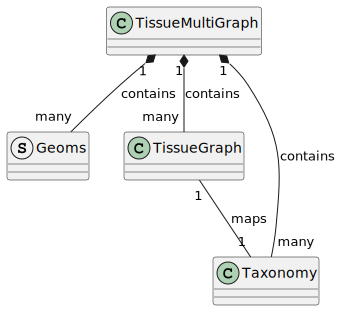
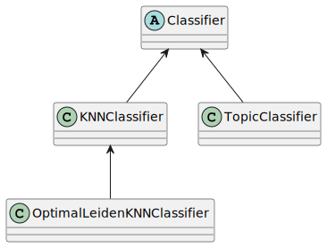

Analysis module¶
Overview¶
The Analysis module contains two submodules: TissueGraph and Classification
TissueGraph module contains the data container classes that include all the core creation methods as detailed below. Classification has all the code for classificaiton of cells / regions into types.
Analysis.TissueGraph submodule¶
Overall, TissueMultiGraph contains four interlinked data structures:
TissueMultiGraph (TMG)
TissueGraph (TG)
Taxonomy (Tax)
Geoms (Geoms)
A single dataset (multiple slices) gets a single TMG, multiple TG, multiple Tax, and multiple Geoms. The following diagram captures the relationship between these four data structures:
{kind=link}
TissueMultiGraph
TMG is the main object that is created for analysis of dredFISH data. The creation of TMG requires many steps and in general follows
the hierarchy of biospatial units, i.e. Analysis.TissueGraph.TissueMultiGraph.create_cell_layer(), Analysis.TissueGraph.TissueMultiGraph.create_isozone_layer(),
and Analysis.TissueGraph.TissueMultiGraph.create_region_layer(). Taxonomies must be provided either while types are added (for cells) or
during the creation of regions. Isozones have the same taxonomy as cells so it is handeled automagically.
Geoms is a list of dictionaries, one for each slice, that contained geometric information about cells that comes from the basic voronoi analysis
The key TMG attributes are:
a list of TG (Layers) one for each TYPE of biospatial units (cells, isozones, regions).
a list of Tax (Taxonomies)
Mapping between TGs and Tax
Mapping between different Layers (cells -> isozones, cells -> regions)
a list of Geoms, one of each slices
TissueGraph TG is a multilayer graph G = {V,E_s,E_f} with one set of vertives V and two sets of edges E_s and E_f representing spatial and feature relationships TG is implemented as an AnnData object (TG.adata) to allow interactin with others packages in the scverse. However, the use of AnnData is “hidden” from TMG user and there is no need to interact with TG.adata directly.
TissueGraph main attributes are:
XY, Slice, and feature_vector for each biospatial unit (cell, isozone, regions)
Spatial Graph (SG) that represents physical neighborhoods
Feature Graph (FG) that represents feature similarities
TissueGraph is implemented as an AnnData object
Taxonomy Tax captures information about the taxonomy that is used to classify units in each TG. Currently, Tax contains a list of types and their attributes.
TODO: expand on Taxonomy attributes beyond Type name and feature vector
Analysis.Classification submodule¶
The goal of the classes in this module is to provide classification services to data in TMG. Any statistical classification applied
to any biospatial units must use the Classifier hierarchy. At the top of the hierarchy is an abstract class that defines the interface
for classificaiton. The interface has two methods: Analysis.Classification.KNNClassifier.train() and Analysis.Classification.KNNClassifier.train()
Any subclass can add any addional field required, but the heavy lifting should be done in train/classify.
In cases that the underlying classificaiton is unsupervized, the classifier will also generated a taxonomy
the current class diagram is the following:
{kind=link}